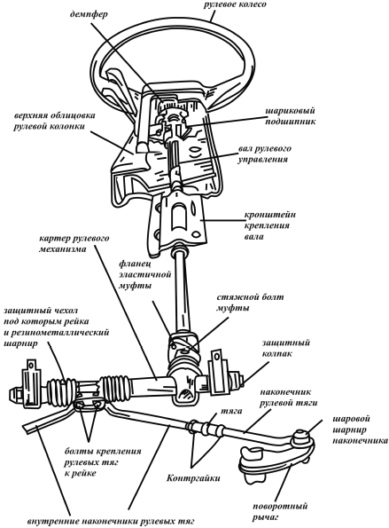

Техническое обслуживание рулевого управления.
Объем работ при обслуживании механизмов рулевого управления (рис. 27) определяется видом технического обслуживания.
Неисправности рулевого управления влияют на управляемость автомобиля и, соответственно, на безопасность движения. К ним относятся: увеличенный холостой ход, тугое вращение рулевого колеса, стуки в рулевом управлении, утечка масла из картера, плохая устойчивость автомобиля, самовозбуждающееся угловое колебание передних колес.

Рис. 27. Механизм рулевого управления
Причины увеличенного холостого хода следующие: ослабление болтов рулевого механизма (для рулевых механизмов только червячного типа), гаек шаровых пальцев рулевых тяг; увеличение зазоров в шаровых шарнирах, подшипниках ступиц передних колес, в зацеплении ролика с червяком (для рулевых механизмов только реечного типа), между осью мятникового рычага и втулками, в подшипниках червяка, между упором рейки и гайкой, люфт в заклепочном соединении.
При тугом вращении рулевого колеса основными причинами являются: деформация рулевого привода; неправильная установка углов передних колес; нарушение зазора в зацеплении ролика с червяком (для рулевых механизмов только червячного типа); перетяжка регулировочной гайки оси маятникового рычага (для рулевых механизмов только червячного типа); отсутствие масла в картере рулевого механизма; повреждение деталей шаровых шарниров, подшипника верхней опоры стойки, опорной втулки или упора рейки (для рулевых механизмов только реечного типа), деталей телескопической стойки подвески; низкое давление в шинах передних колес.
Причина стуков в рулевом управлении заключается: в увеличении зазоров в подшипниках передних колес, между осью маятникового рычага и втулками; в зацеплении ролика с червяком или в подшипниках червяка (для рулевых механизмов только червячного типа), в шаровых шарнирах рулевых тяг, между упором рейки и гайкой (для рулевых механизмов только реечного типа); в ослаблении гайки шаровых пальцев рулевых тяг, болтов крепления рулевого механизма или кронштейна маятникового рычага (для рулевых механизмов червячного типа), гаек шаровых пальцев поворотных рычагов, болта крепления нижнего фланца эластичной муфты на валу шестерни (для рулевых механизмов только реечного типа); в ослаблении регулировочной гайки оси маятникового рычага.
Основными причинами плохой устойчивости автомобиля могут быть: нарушение установки углов передних колес; увеличение зазоров в подшипниках передних колес, в шаровых шарнирах рулевых тяг, в зацеплении ролика и червяка (для рулевых механизмов только червячного типа); ослабление гаек шаровых пальцев рулевых тяг, крепления картера рулевого механизма или кронштейна маятникового рычага (для рулевых механизмов только червячного типа); деформация поворотных кулаков или рычагов подвески.
Причинами утечки масла из картера является: износ сальников вала рулевой сошки или червяка (для рулевых механизмов только червячного типа); повреждение уплотнительных прокладок; ослабление болтов крепления крышки картера рулевого управления.
Основные причины самовозбуждающегося углового колебания передних колес заключаются: в ослаблении гаек шаровых пальцев рулевых тяг, болтов крепления рулевого механизма или кронштейна маятникового рычага; в нарушении зазора в зацеплении ролика с червяком.
Для налаженной работы механизма рулевого управления необходимо: осматривать места креплений, проверять нет ли подтекания смазки в редукторе, проверять люфт и сопротивление в рулевом колесе. После первых 2–3 тыс. км пробега, а затем через каждые 10–15 тыс. км следует осуществлять общую проверку рулевого управления, которая заключается в проверке крепления картера редуктора рулевого механизма и рулевого колеса, зазоров в резинометаллических и шаровых шарнирах рулевых тяг, затяжки креплений рулевых тяг к рейке, различных заеданий, шумов и стуков, состояния защитных чехлов рулевого механизма и шаровых шарниров рулевых тяг. Через 60 тыс. км пробега или в случае подтекания масла следует проверить уровень масла в картере рулевого механизма червячного типа, а через пять лет эксплуатации автомобиля и при каждом ремонте редуктора рулевого механизма следует менять смазку. Для слива масла из редуктора рулевого механизма червячного типа ослабляют нижнюю крышку редуктора или стопорную гайку подшипников червяка. После слива в картер рулевых механизмов червячного типа заливают масло.
При обслуживании рулевого управления с гидроусилителем производят проверку и регулировку приводных ремней, проверку уровня жидкости в бачке гидроусилителя, проверяют наличие утечек, гидравлическую систему, а также усилия поворота рулевого колеса.
Ремни проверяют на отсутствие трещин, расслоения, износа и замасливания, а при наличии этих дефектов заменяют. Через 30 тыс. км пробега необходимо проверить и, если необходимо, отрегулировать натяжение ремня привода насоса гидроусилителя рулевого управления.
Прогиб проверяют в средней верхней части привода насоса. Он не должен превышать 7–10 мм в зависимости от конструкции. В случае необходимости натяжение производят путем перемещения корпуса насоса.
Уровень жидкости в бачке проверяют при неработающем двигателе. В качестве рабочей жидкости для рулевых управлений с гидроусилителем обычно применяют маловязкое масло. Уровень жидкости определяется по стержню, устанавливаемому в бачке гидроусилителя, либо по отметкам бачке. Шкала НОТ соответствует температуре жидкости от 50 до 80 °C, а шкала GOLD – температуре от 0 до 30 °C.
Через 30 тыс. км необходимо проверять шланги на наличие утечек, трещин, ослабления креплений, разрушения и т. п. После проведения наружной проверки пускают двигатель и поддерживают частоту вращения коленчатого вала между минимальной и 1000 об/мин. Двигатель и рабочая жидкость в системе рулевого управления прогреваются до 60–80 °C. Рабочая температура достигается при работе двигателя в режиме холостого хода с поворачиванием рулевого колеса в течение 2 мин или после 10 км пробега. Рулевое колесо поворачивают несколько раз от упора до упора. Удерживая его в каждом из крайних положений по 5 с, проверяют, нет ли утечек жидкости. В ходе выполнения проверки удерживать рулевое колесо в крайнем положении более 15 с нельзя.
Перед началом проверки гидросистемы следует проверить натяжение приводного ремня насоса, приводной шкив и давление воздуха в шинах. К гидросистеме между насосом и приводом подсоединяют манометр с краном, после чего прокачивают систему для удаления воздуха. Затем запускают двигатель и доводят температуру рабочей жидкости до 60–80 °C. Двигатель прогревается при полностью открытом кране, прогревание при закрытом кране может привести к повышению температуры. Поворачивая рулевое колесо до упора влево и вправо при работающем двигателе с частотой вращения коленчатого вала 1 000 об/мин, определяют развиваемое насосом гидроусилителя давление.
Если давление меньше 78–84 cм, кран медленно закрывают на 15 с и вновь проверяют давление. Повышение давления свидетельствует об исправной работе насоса и неисправности рулевого механизма, низкое давление при закрытом кране – о неисправности насоса. Повышение давления в системе при проверках говорит о неисправности предохранительного клапана насоса. После проверки гидравлической системы манометр отсоединяют и при необходимости доливают рабочую жидкость, после чего из системы удаляют воздух.
Для проверки усилия поворота рулевого колеса автомобиль устанавливают на ровную сухую поверхность, затормозив его стояночным тормозом, доводят до нормы давление в шинах. Запускают двигатель, прогревают рабочую смесь до 60–80 °C. С помощью динамометра измеряют усилие поворота рулевого колеса после поворота его на 360 °C из нейтрального положения. Одно усилие должно быть не более 4. Если усилие выше данного значения, проверяют усилие сдвига рейки (для рулевых управлений реечного типа). Для этого отсоединяют нижний шарнир рулевого вала от рулевого механизма и рулевые тяги от поворотных кулаков.
Запускают двигатель и прогревают рабочую жидкость гидросистемы до рабочей температуры. Прикрепив динамометр к рулевой тяге, медленно сдвигают ее из нейтрального положения на 11,5 мм в обе стороны. Среднее усилие сдвига рейки 15,5–24,5. Если усилие сдвига рейки не находится в указанных пределах, рулевой механизм необходимо ремонтировать; при нормальном усилии сдвига следует проверить рулевую колонку.
Общую проверку технического состояния рулевого управления необходимо производить по суммарной величине люфта и усилию, необходимому для поворачивания рулевого колеса. При необходимости или для контроля выполняют общую проверку рулевого управления с помощью специального оборудования. Если техническое состояние рулевого управления неудовлетворительно, требуется поэлементарная проверка, которую осуществляют путем непосредственного осмотра и испытания под нагрузкой.